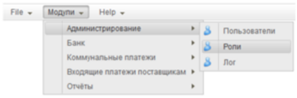
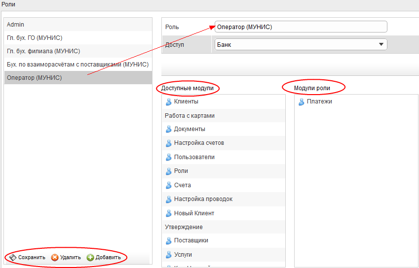
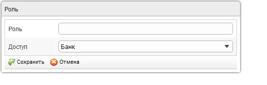
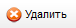
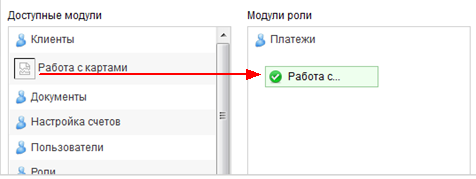

Для открытия модуля настройки ролей нужно воспользоваться пунктом меню «Модули \ Администрирование \ Роли» (см. Рисунок 1).

Рисунок 1
Карточка модуля "Роли" содержит следующие разделы (см. Рисунок 2):

Рисунок 2
1.Раздел со списком ролей ранее зарегистрированных в Системе (в левой части формы).
Для того, чтобы добавить новую роль, нужно нажать кнопку  и заполнить карточку новой роли (см. Рисунок 3).
и заполнить карточку новой роли (см. Рисунок 3).

Рисунок 3
Для того, чтобы удалить роль из списка, нужно нажать кнопку

и подтвердить запрос на удаление. Удалять можно только те роли, которые не назначены никому из пользователей!
2.Панель управления. Содержит кнопки  , ,
, ,  .
.
3.Раздел с описанием роли, выбранной в списке (в правой части формы). В описательной части этого раздела можно изменить название роли, уровень доступа (поля "Роль", "Доступ"). Для сохранения внесённых изменений нужно нажать кнопку  .
.
Кроме того, в разделе можно указать модули Системы, доступные для работы с данной ролью. Для этого нужно запись из списка "Доступные модули" "перетащить" мышкой в список "Модули роли" и отпустить кнопку мышки. (см. Рисунок 4). Модуль сразу же прикрепляется к текущей роли, и дальнейшего сохранения не требуется.

Рисунок 4